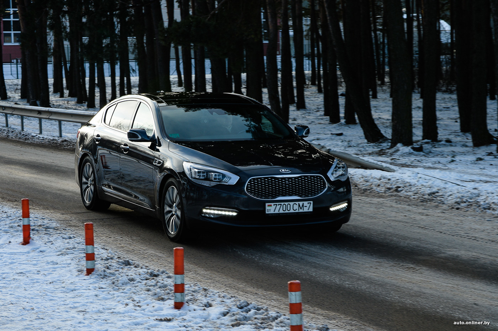
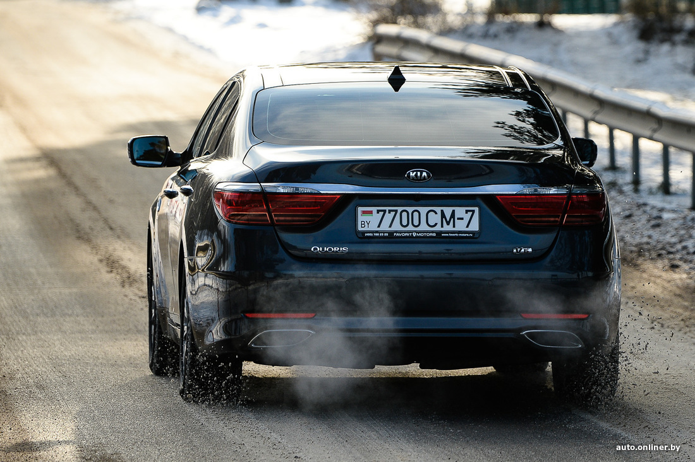
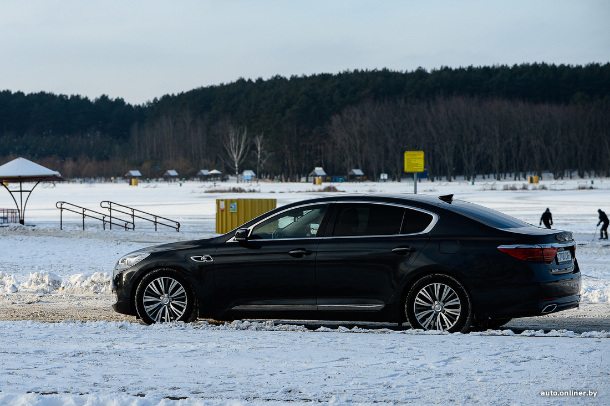

Самая недооцененная Kia. Честный отзыв о большом седане Quoris
Десять лет назад компания Kia решила выступить в сегменте крупных седанов, чтобы
корейским бизнесменам не
приходилось покупать продукцию Mercedes, BMW или Audi. Так на свет появился седан Quoris. Машина
позиционировалась как «автомобиль представительского класса». Задний привод, расположенный продольно
V-образный
мотор, более пяти метров от носа до «хвоста», куча премиальных опций. Не к таким Kia мы привыкли. Основными
рынками сбыта должны были стать Южная Корея, Китай, США и Россия. В общем, те страны, где хорошо продаются
крупные седаны не только немецкого происхождения. Популярным Quoris стал разве что у себя на родине, где
продавался под названием К900. Но пара-тройка таких седанов ездит и по Минску. Мы пообщались с владельцем
одного
из них.
Нужен был просторный седан за приемлемые деньги
— У меня автомобиль 2017 года выпуска. Покупался новым в салоне официального дилера в Москве. Когда я искал
себе очередную машину, сформулировал два основных требования: хотелось просторный комфортный седан, но при
этом
я не желал выходить за пределы определенного бюджета. Марка была не принципиальна, — рассказал Onlíner
владелец
редкой Kia Алексей. Минчанин приобрел ее в 2018 году — на складе у дилера было несколько прошлогодних машин,
которые продавались с хорошей скидкой.

Алексей признается, что обращал внимание на эту модель еще в момент выхода, а перед
покупкой изучил
информацию
о седане в интернете, пересмотрев обзоры. Пообщавшись с сотрудниками московского дилера по телефону, мужчина
выбил скидку и уже на следующий день застегнул ремень в кресле самолета Минск — Москва.

Кроме скидки от дилера, в момент покупки снова «качнулся» российский рубль, что тоже
сыграло свою роль в
конечной цене автомобиля. В итоге большой корейский седан обошелся менее чем в 40 тысяч долларов по курсу.
Для
машины такого класса это очень выгодная цена. В 2018 году Quoris продавался в России в двух комплектациях —
Luxury и более богатой Premium. Первая шла только с двигателем на 3,8 литра (334 л. с., 395 Н·м, 6,8 секунды
до
сотни), вторая могла быть как с таким же V6, так и с 8-цилиндровым мотором объемом 5 литров (424 л. с., 510
Н·м,
5,7 секунды до сотни). У Алексея топовая версия Premium с двигателем V6.

Ответить
Цитировать
Ответить
Цитировать